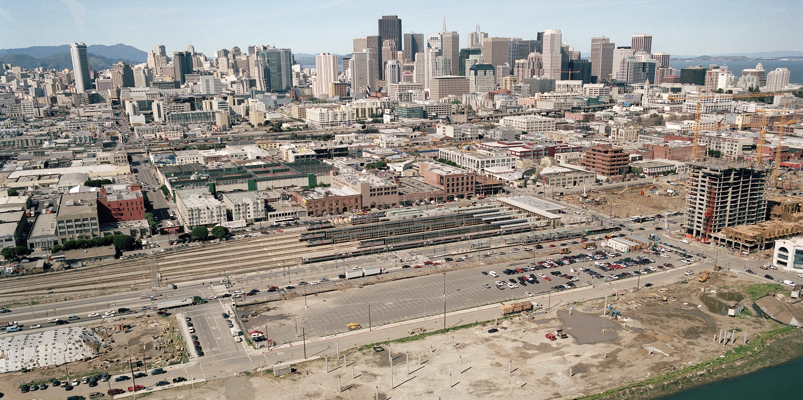
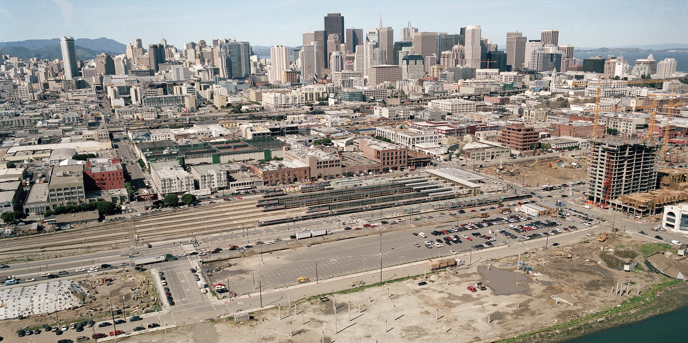

Palomar, CA
 

-
About
The Cherrybrook Group is a privately held land development company with over 30 years of experience in the greater San Francisco Bay Area market.
Read more -
Portfolio
We've developed millions of square feet in communities for residential and mixed use land. From x,y,z to p,q,r our projects cover a wide range of locations, topographies, styles and product types. (???????-nb. include pics???)
See portfolio -
Contact us
330 2nd Street, Suite 2,
Los Altos, CA 94022P: (650) 947-4087
Directions
E: TomQuaglia@att.net